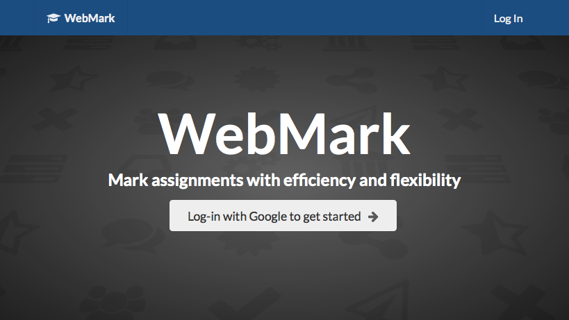
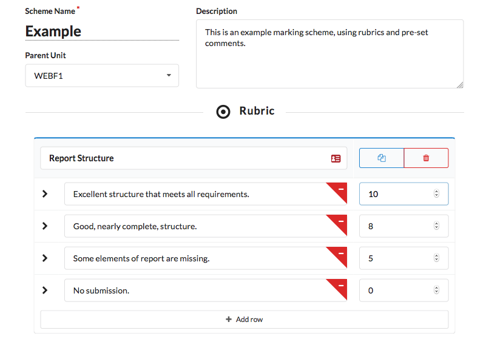
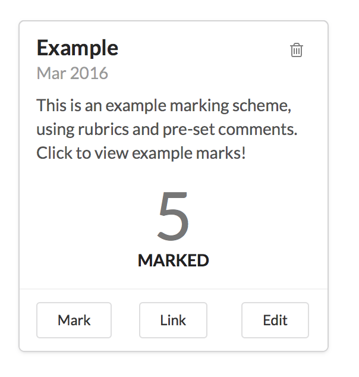

About
WebMark is an offline-compatible Web Application to enable efficient marking on a wide range of devices. This guide will describe the process of creating new schemes, using them to mark, sharing them among markers, and viewing or exporting the results.
User Guide
- Getting Started
- Creating a Marking Scheme
- Managing and Sharing Your Schemes
- Using a Marking Scheme
- Viewing and Exporting Marks
Getting Started
The homepage will present options to log-in with Google. This will associate your schemes with this account, so be sure to use the same Google account each time you log-in to access your schemes. WebMark will have no access to your Google account or credentials, it is only used to authenticate you and verify access to your marking data.
Creating a Marking Scheme
Selecting new scheme from the Dashboard or navigation will present you with a blank scheme. Schemes are made with the following sections:
- Scheme Name: Provide a name to identify this scheme, viewable by all markers and students who receive marks through WebMark.
- Parent Unit: This will be used to help organize your marking schemes, and is optional.
- Description: Optionally add some additional information about this scheme, such as guidance to other markers.
- Rubrics: Individual aspects of the submission to mark against a scale. Each row can be assigned a specific mark, and the highest of these will be automatically calculated as the maximum mark for this attribute. Pressing tab is a quick way to add more criteria, as a new row will be inserted automatically if the previous row was not empty. Duplicate and deletion buttons in the top right will insert another copy this attribute, or remove it. To remove an individual row, select the red minus arrow in the row description.
- Preset Comments: Add comments here that you may want to apply to multiple submissions. On the scheme, these will be displayed as options
- Adjustment: Set the allowable range of mark adjustment to provide to markers. Keeping this at zero will prevent manual mark adjustment.
Managing and Sharing Your Schemes
On your dashboard, each marking scheme can be managed using its card. Selecting the card will show the scheme's results so far. The bin icon will allow you to remove the scheme and its marks. The three remaining options, displayed as buttons on the bottom of the card, allow you to mark using the scheme, copy a unique link to the scheme, or edit it using the same options as a new scheme. Editing a scheme will not affect results already submitted, but it will update all users with an existing link. This can be useful for adding a new pre-set comment!